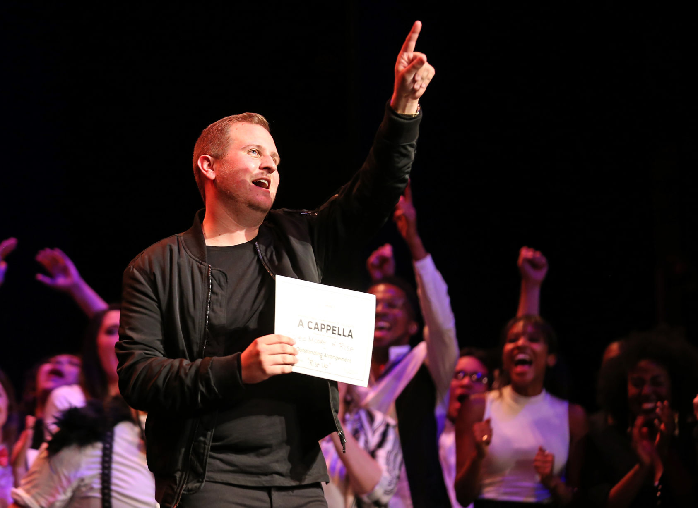

LIFE
On the rise: one a capella group's claim to fame
The story of a transfer student that used his talents to create an a cappella legacy at UTA.
From the top
Caleb Moore began his college career pursuing a degree in voice at Baylor University. He said it wasn’t until he joined an a cappella group that he discovered a hidden talent for producing music. The music director for VirtuOSO, Baylor’s co-ed a cappella group, said he had a senior recital to focus on and could not arrange the music for the upcoming ICCA. “And so, we were all like, ‘What are we gonna do?’ None of us arranged and I was like, ‘Well, I’ll just try my hand at it,” Moore said. With Moore’s music arrangement, VirtuOSO made it to the final round of the international competition in New York City and placed fourth in April 2015. That was also the first time a Texas university made it to the final round of the competition.
“It made me feel really validated and really excited that, like, I had this craft that I didn’t know I had until I was just forced into it,” he said. Baylor became expensive for Moore and his interest for his current degree plan was diminishing. He decided to take a semester off to figure out what he wanted to do. As he thought back to his arranging experience with VirtuOSO, Moore researched music media programs across the state and found UTA. He said he transferred because it was affordable, close to home and had one of the only music media programs in the state. However, when he stepped foot on campus, he was upset to find out UTA did not have an a cappella group. “I was like, ‘You know what, maybe it’s time to focus on school and just graduate,’ but instead I started an a cappella group because it’s my passion. It’s what I love to do,” he said. The first year Music media senior Caleb Moore plays the piano for the RISE A Capella warm up session Jan. 26, 2017 in the Fine Arts Building. The group practiced for the upcoming International Championship of Collegiate A Cappella quarterfinal competition. The Shorthorn: file photo Moore had a set of goals going into the first year. He wanted to find a group that blended well together, make them known on campus by holding flash mobs, compete in the ICCA, and hold a series of concerts on campus.  After placing flyers on every nook and cranny campus had to offer, posting on every UTA Facebook page he could find and verbally spreading the word across campus to hold auditions, RISE A Cappella was born. The audition process went better than expected for Moore. He said he expected about 10 people to show up but instead had 40 try out. Out of the 40, he accepted 17 students the first year. Of those 17 selected the first year is Alexis Galindo, the group’s current assistant music director. “That first year was a crazy one. We didn’t know what we were doing,” she said. With most being unfamiliar with the a cappella world, the group didn’t know what to expect from the international competition its first year. Moore arranged the music, but they did not make it past the first round in the competition. “We’ve become a family, and that’s really the biggest motivator for me,” she said. “These people have been my best friends since I got here.”
The second year
Eric España, RISE A Cappella member, center, performs the group's 12-minute set in front of an audience April 19 in the Rio Grande Ballroom. The group will depart to New York City on Friday morning to compete in the International Championship of Collegiate A Cappella on Saturday night. Marangeli Lopez After a year of establishing themselves on campus, getting their feet wet in the a cappella world and fostering relationships with music faculty at UTA, RISE A Cappella was ready to tackle more in its second year. They were already established and had a foundation, so instead of just getting exposure on campus, they wanted to gain exposure around the Arlington community and the collegiate a cappella world, Moore said. This past year, they performed in UTA’s Homecoming Parade and pep rally, they were featured in Patti LaBelle’s Home for the Holidays with Friends Christmas album, they recorded their own album On the Rise and appeared in a Cheerios commercial.
“I think that people’s drive and motivation changed once we started succeeding,” he said. In addition to those performance gigs, the group's largest and most recent success was placing fourth in the ICCA final round, Moore said. “I really never expected to make it to finals,” he said. “I believed in my group, but I also know this competition is really hard.” Despite only being 18-months old, and learning their 12-minute set in three months, they created something he felt was special to them. Placing fourth in the world is a big accomplishment and he feels the feedback from the a cappella community was incredible. “I was sitting up in like the balcony and I felt like I was connecting with them on an individual level,” said Chris Hoffman, Hofstra University marketing graduate student. Hoffman had not heard of RISE A Cappella until he attended the final round of the competition in New York City. The Long Island resident said he is highly involved in the a cappella world. He was in his university’s group when he was an undergraduate student and was a judge in regional competitions for the ICCA. “It was such a unique experience and something that I wasn’t expecting out of this group that I had never even heard of before,” he said. RISE A Cappella's journey is filled with music, adventures NEW YORK– A long day of rehearsals, a cappella music, elevator rides and performances filled RISE A Cappella's second day in New York City. The group was set to compete in the International Championship of Collegiate A Cappella finals at the Beacon Theatre. They spent most of the day in the nearby hotel and the theatre perfecting their set before the competition later that evening.
Rising to the future
Alexis Galindo, RISE A Cappella member, sings "In the Name of Love" by Martin Garrix and Bebe Rexha on April 19 in the Rio Grande Ballroom. Now that the international competition is over, Moore said RISE A Cappella will be competing in the International Championship of A Cappella Open, an international competition hosted by Varsity Vocals, in which participants can be of any age group and will compete for a $25,000 prize to begin their professional career. He said they were selected for their 12-minute set performed at the international competition. The group was also booked by different on-campus organizations and community members to sing at events ranging from banquets to weddings. Because Moore is graduating in August, he has been training Galindo to be the next music director for RISE A Cappella because he said he believes she will continue to lead the group to success. “Whenever he asked me I was like, ‘I don’t know if I can do this because what you do all the time is insane,’” she said. The music director is in charge of arranging music that will bring the best sound out of the group, leading rehearsals, entering contests and seeking performance opportunities, among other responsibilities.
Each semester, auditions are held for RISE A Cappella. Interested members and returners alike audition for a spot in the group. Galindo said it’s difficult to have specific goals in place for the sound of the group because she won’t know the sound until auditions take place. “You can plan all you want,” she said. “But you kind of just have to go as life takes it because you don’t know what’s gonna come in.” A concrete goal she does have is to continue the legacy Moore built and to continue to build up the group’s presence on campus and the a cappella community. “I’m just so thankful for this opportunity because it’s really helped me,” she said “It’s inspired me to be a music educator.” Moore said he plans on being around to aid the group in any help it needs, but after graduation, he wants to obtain his teaching certification and bring a cappella to high schools in Texas. “When you find your passion and you find something that like you’re really good at or that completes you, you want to continue in that,” Moore said. Although he’s not ready to give up the group, he knows it will be in good hands and he said he’s thankful for the family he has created at UTA. “I think college would have been so different, and I probably wouldn’t have enjoyed it as much had I not joined an a cappella group.” news-editor@shorthorn.uta.edu